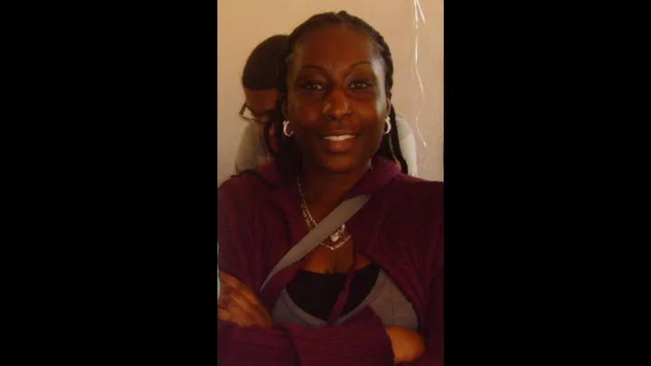

About Love LaVada
A personal story.
A community purpose.

Marquita “LaVada” HairstonThe heart behind our name
Why we began
Love LaVada, Inc was created to honor the life and legacy of Marquita “LaVada” and bring greater awareness to mental health, suicide prevention, healing, and community support.
What began in heartbreak has grown into a commitment to help others feel seen, supported, and never alone. We believe care is strongest when it is culturally responsive, easy to understand, and connected to the communities people already trust.
Rooted in High Point.Serving the Triad and communities across North Carolina.
Our mission
Love LaVada is dedicated to suicide prevention, mental health advocacy, and community empowerment in memory of Marquita Hairston.
Care begins with the simple reminder that no one has to carry everything alone.
- Educate and raise awarenessProvide accessible education and support around mental health and suicide prevention.
- Connect people to helpShare trusted local and national resources with individuals and families.
- Create room for healingHost outreach, workshops, and events that reduce stigma and strengthen resilience.
- Work in partnershipCollaborate with schools, churches, and community organizations to promote well-being.